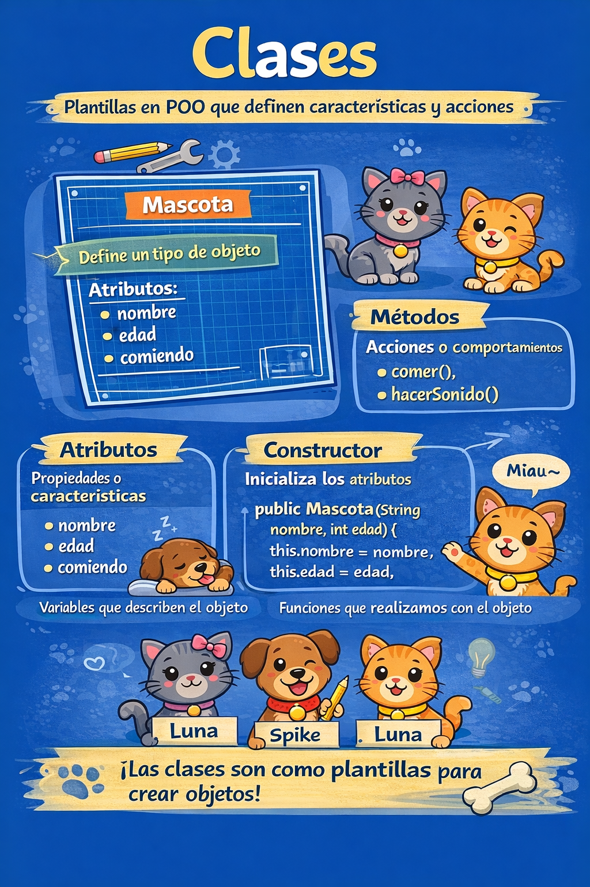
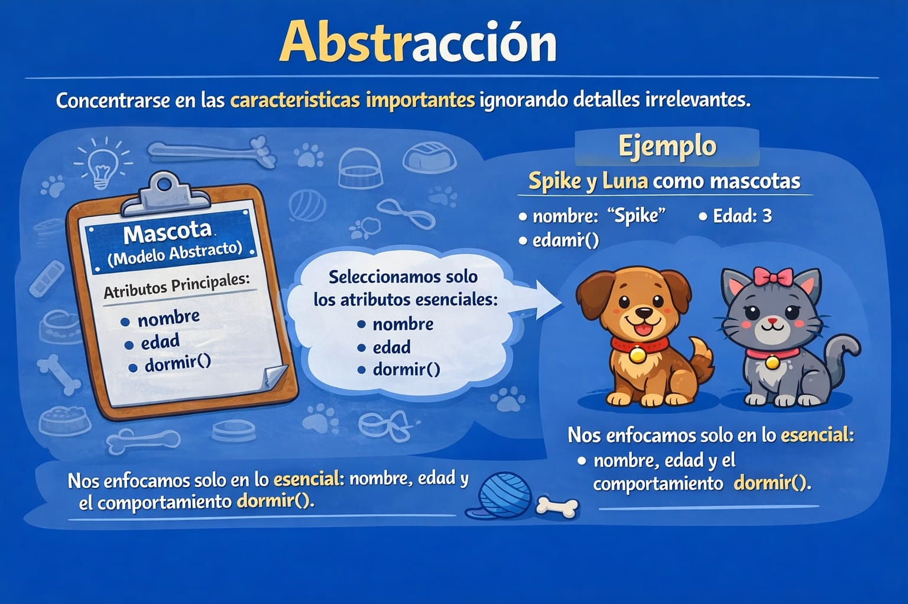
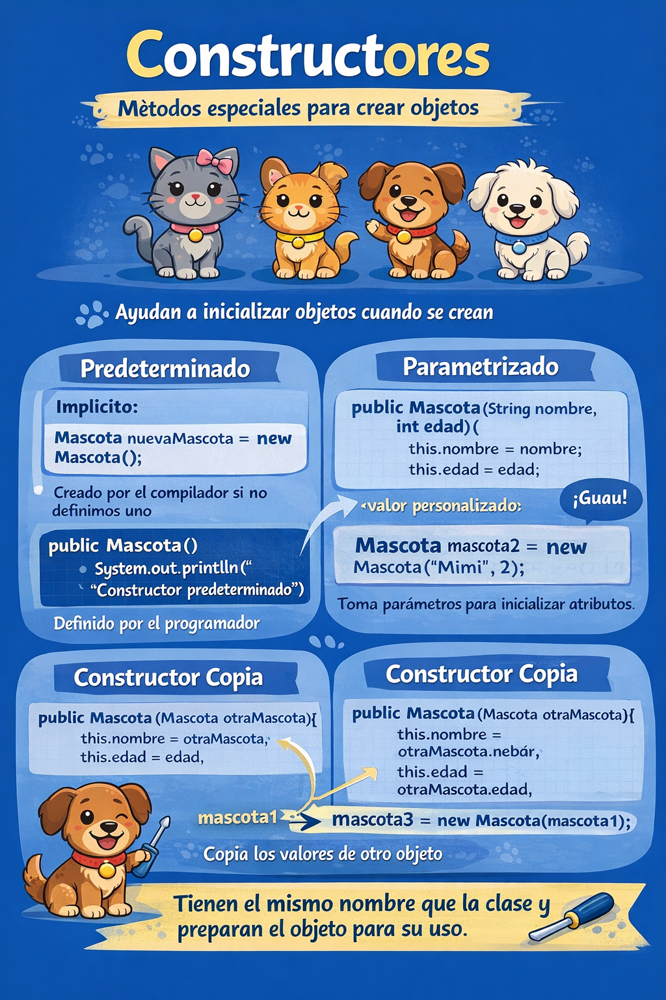
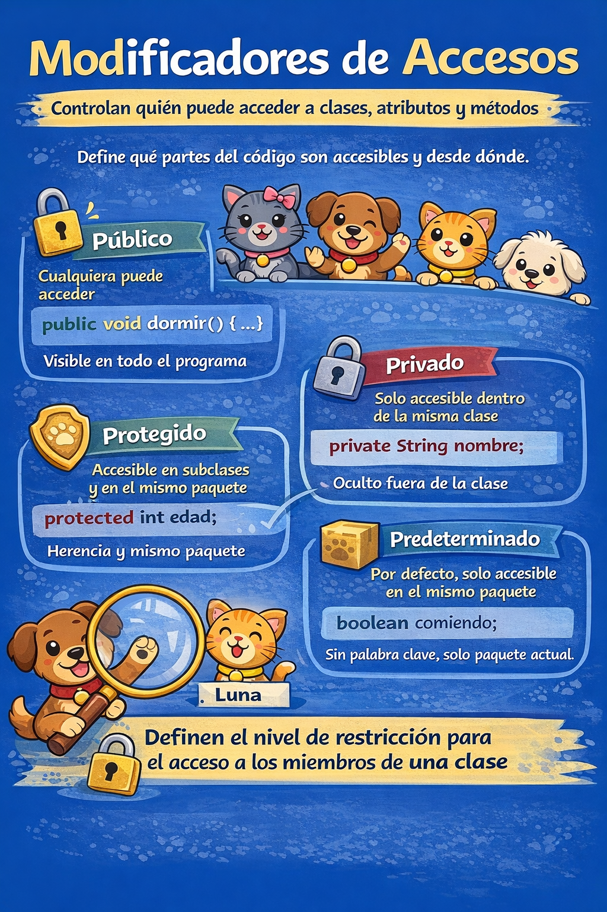
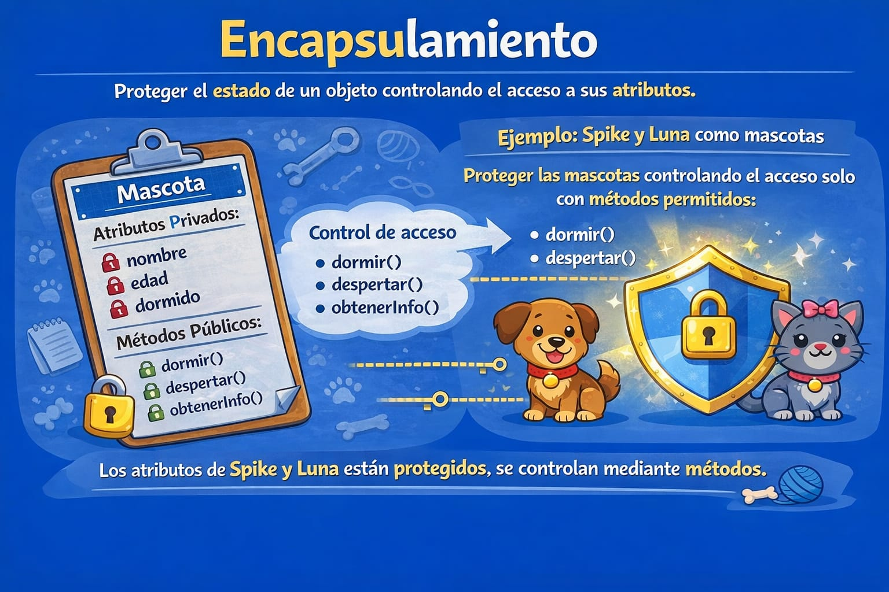
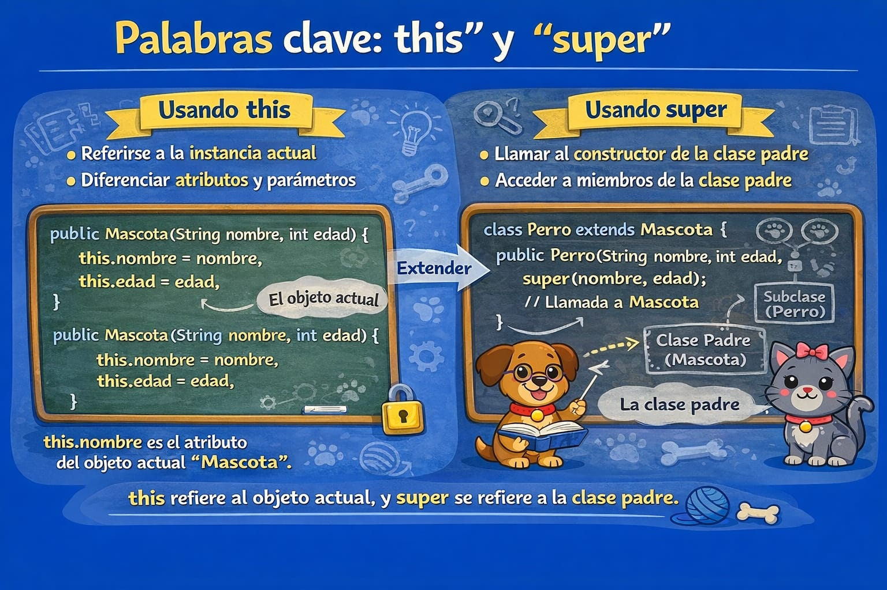
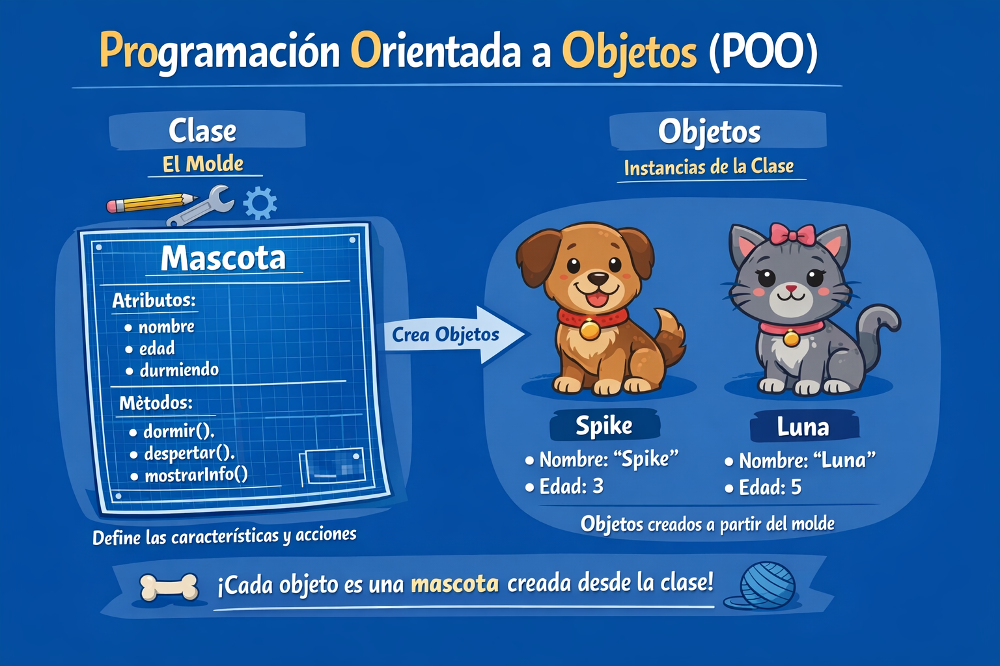

Programando Orientado a Objetos
En este laboratorio, exploraremos los conceptos fundamentales de la Programación Orientada a Objetos (POO), que nos permitirá organizar y manipular la información de forma modular y reutilizable en el desarrollo de software.
¿Qué es POO?
POO organiza el software en clases y objetos para mejorar orden, reutilizacion y mantenimiento.
¿Qué es una clase?

Una clase define:
-
Atributos (características)
-
Metodos (acciones)
-
Constructores
-
Modificadores de acceso
public class Mascota {
String nombre;
int edad;
boolean comiendo;
public void comer() {
this.comiendo = true;
System.out.println("Ñam Ñam Ñam");
}
public void hacerSonido() {
System.out.println("Woof!");
}
}
Abstracción

Abstraer es modelar solo lo necesario del problema.
Constructores

Un constructor inicializa el objeto al crearlo.
//Constructor predeterminado explícito
Mascota(){
System.out.println("Constructor predeterminado")
}
//Constructor parametrizado
public Mascota(String nombre, int edad) {
this.nombre = nombre;
this.edad = edad;
this.comiendo = false;
}
//Constructor Copia
public Mascota(Mascota otraMascota) {
this.nombre = otraMascota.nombre;
this.edad = otraMascota.edad;
this.comiendo = otraMascota.comiendo;
}
💡*Nota:* No es necesario escribir un constructor para una clase. Es porque el compilador java crea un constructor predeterminado (constructor sin argumentos) si su clase no tiene ninguno.
Modificadores de acceso

-
public: accesible desde cualquier clase. -
private: accesible solo dentro de la clase. -
protected: accesible en el mismo paquete y subclases. -
Sin modificador: acceso por paquete.
💡Nota: Las interfaces y clases anidadas pueden tener todos los modificadores de acceso.
💡Nota: No podemos declarar clase/interfaz con modificadores de acceso privados o protegidos.
Encapsulamiento

Encapsular protege los atributos y controla el acceso mediante metodos.
public class Mascota {
// Atributos encapsulados
private String nombre;
private int edad;
private boolean durmiendo;
// Constructor
public Mascota(String nombre, int edad, boolean durmiendo) {
this.nombre = nombre;
this.edad = edad;
this.durmiendo = durmiendo;
}
// Métodos de acceso (getters y setters)
public String getNombre() {
return nombre;
}
public void setNombre(String nombre) {
this.nombre = nombre;
}
public int getEdad() {
return edad;
}
public void setEdad(int edad) {
this.edad = edad;
}
public boolean isDurmiendo() {
return durmiendo;
}
public void setDurmiendo(boolean durmiendo) {
this.durmiendo = durmiendo;
}
}
Uso de this y super

-
this: referencia al objeto actual. -
super: referencia a la superclase.
// Superclase
public class Mascota {
String nombre;
int edad;
boolean durmiendo;
public Mascota(String nombre, int edad, boolean durmiendo) {
this.nombre = nombre; // 'this.nombre' es el atributo de la clase
this.edad = edad; // 'edad' es el parámetro del constructor
this.durmiendo = durmiendo;
}
public void hacerSonido() {
System.out.println("La mascota hace un sonido genérico.");
}
}
// Subclase
public class Perro extends Mascota {
public Perro(String nombre, int edad, boolean durmiendo) {
// Llamada al constructor de la superclase
super(nombre, edad, durmiendo);
}
@Override
public void hacerSonido() {
// Llamada al método de la superclase
super.hacerSonido();
System.out.println("El perro ladra: ¡Guau!");
}
}
Implementando lo que hemos aprendido
public class Mascota {
// Atributos
String nombre;
int edad;
boolean durmiendo;
// Constructor parametrizado
public Mascota(String nombre, int edad, boolean durmiendo) {
this.nombre = nombre;
this.edad = edad;
this.durmiendo = durmiendo;
}
// Métodos
public void dormir() {
this.durmiendo = true;
System.out.println("La mascota está durmiendo.");
}
public void despertar() {
this.durmiendo = false;
System.out.println("La mascota está despierta.");
}
public void mostrarInfo() {
System.out.println("Nombre: " + nombre);
System.out.println("Edad: " + edad);
System.out.println("¿Está durmiendo? " + (durmiendo ? "Sí" : "No"));
}
}
¿Qué es un objeto?
Un objeto es una instancia concreta de una clase.
Instanciar una clase

Declarar una referencia no crea el objeto; se crea con new.
Mascota perro;
perro = new Mascota("Spike", 3);
Inicializar y usar un objeto
public class Main {
public static void main(String[] args) {
Mascota perro = new Mascota("Spike", 3, false);
perro.mostrarInfo();
}
}
Salida
Nombre: Spike
Edad: 3
¿Está durmiendo? No
Cierre
POO permite escribir codigo mas claro, reutilizable y facil de mantener mediante clases y objetos.
Anexos
-
Documentación oficial de Oracle Java: Guía completa de la plataforma Java y tutoriales sobre POO.
-
https://docs.oracle.com/en/java/
-
Java Cheat Sheet (PDF): Resumen rápido de sintaxis y patrones de uso.
-
https://introcs.cs.princeton.edu/java/11cheatsheet/
-
Canal de YouTube "Java Brains": Vídeos sobre principios de POO, patrones y buenas prácticas.